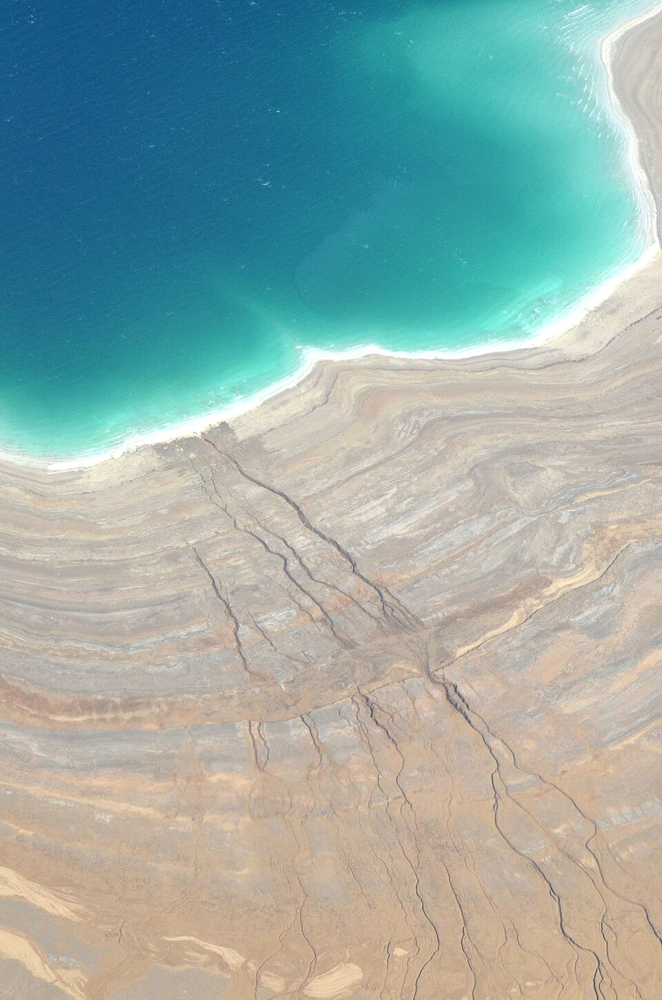

ים המלח - ישראל
|
ים המלח הוא פלא טבע ייחודי המהווה את הנקודה הנמוכה ביותר על פני כדור הארץ. ריכוז המלחים הגבוה במים, שעולה פי כמה על זה של האוקיינוסים, יוצר תופעה פיזיקלית מרתקת המאפשרת למבקרים לצוף ללא מאמץ, תוך שהם נהנים מחוויית רוגע מוחלטת אל מול נוף הרי אדום והרי יהודה. מעבר לציפה המפורסמת, האזור כולו נחשב למרכז בריאות עולמי בזכות סגולותיו הטבעיות: בוץ מינרלי - הבוץ השחור והעשיר במינרלים ידוע ביכולתו להזין את העור, להמריץ את מחזור הדם ולהקל על בעיות פרקים. אקלים מרפא - האוויר בים המלח עשיר בברומיום (המסייע להרגעה) ובחמצן, והשמש המקומית מסוננת באופן טבעי, מה שמאפשר שהייה ממושכת יחסית בחוץ לצרכי מרפא. נוף עוצר נשימה - המפגש בין המים הכחולים לבין גבישי המלח הלבנים המנצנצים בשוליים יוצר ניגודיות מרהיבה עם גווני החום והזהב של המדבר מסביב. זהו יעד המשלב היסטוריה מרתקת, פלאים גיאולוגיים ואפשרות להתנתק מרעשי היומיום לטובת חוויה של התחדשות לגוף ולנפש. |
 |